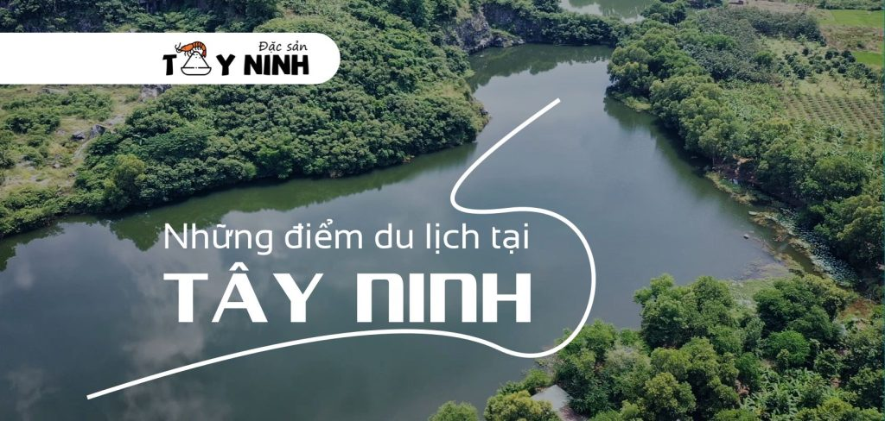
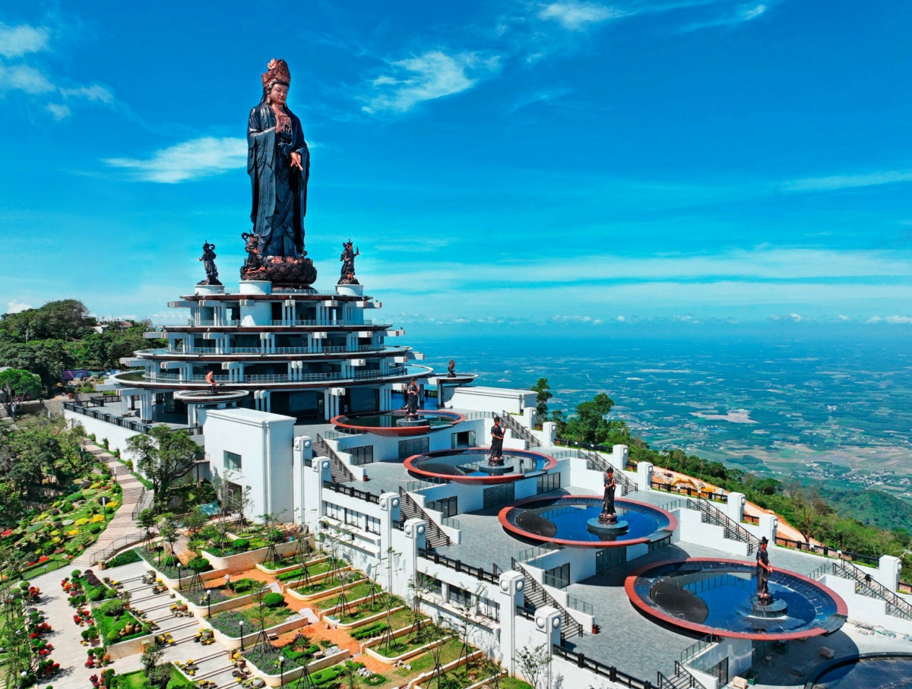
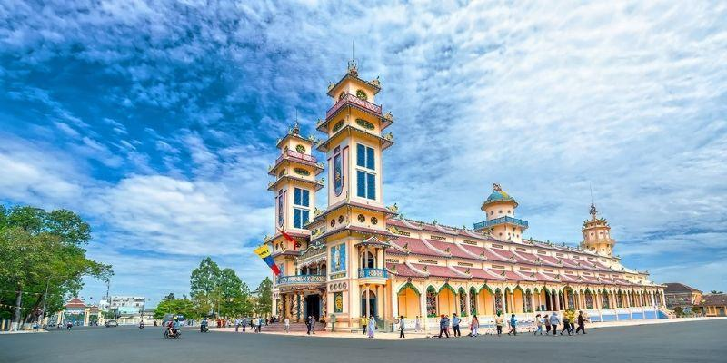
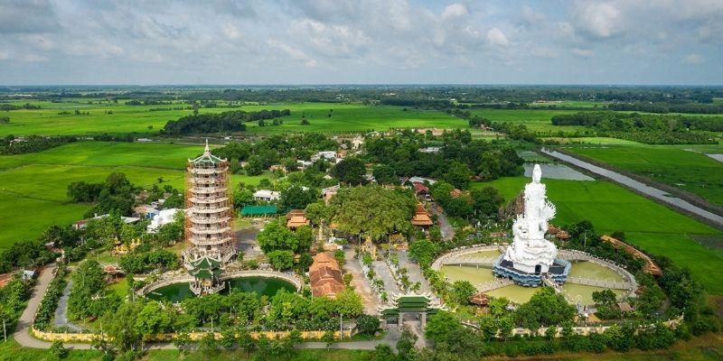

1. Cách di chuyển đên tây ninh
Đi từ thành phố
- Di chuyển bằng xe máy, ô tô nhà: Tây Ninh cách TP. HCM khoảng 2-3 tiếng chạy xe. Từ ngã tư An Sương, bạn chạy theo tuyến quốc lộ 22 đến ngã ba Trảng Bàng, đi thẳng hoặc rẽ phải đều có thể tới được Thành phố Tây Ninh.
- Di chuyển bằng xe khách: Có nhiều nhà xe khai thác chuyến Sài Gòn - Tây Ninh với mức giá khá phải chăng từ 120.000 - 230.000 VNĐ/vé. Bạn có thể chọn điểm khởi hành ở bến xe Củ Chi, bến xe An Sương, hoặc thậm chí là sân bay Tân Sơn Nhất nếu từ miền Bắc hoặc miền Trung đến.
- Di chuyển bằng xe buýt: Đây là cách di chuyển tiết kiệm nhất nhưng sẽ tốn nhiều thời gian vì xe buýt phải dừng ở nhiều trạm, phù hợp cho các bạn trẻ thích trải nghiệm.
*Đi từ miền khác:
-Di chuyển bằng máy bay: Nếu bạn xuất phát từ các tỉnh miền Bắc và miền Trung thì có thể đặt vé máy bay đến TP. HCM, sau đó di chuyển bằng xe máy, ô tô hoặc xe khách đến Tây Ninh theo hướng dẫn phía trên.
Núi bà đen
Núi Bà Đen là địa điểm nổi bật nhất khi nhắc đến du lịch Tây Ninh. Núi Bà được mệnh danh là nóc nhà của vùng Nam Bộ với độ cao 986m. Nơi đây gồm một quần thể công trình tâm linh lâu đời với chùa Hang và chùa Bà được nhiều người dân gần xa viếng thăm.
Hiện nay, núi Bà Đen đã được trùng tu, khai thác du lịch chuyên nghiệp với hệ thống cáp treo 2 chặng dừng được xây mới: tuyến cáp treo đi chùa Hang và tuyến cáp treo lên đỉnh núi.
Tại đỉnh núi, SunGroup đã đầu tư xây dựng vườn hoa và khu trưng bày nghệ thuật Phật giáo giúp trải nghiệm khám phá đỉnh núi Bà Đen thêm phần phong phú.
Bạn cũng có thể thưởng thức những món ăn tươi ngon tại nhà hàng buffet Vân Sơn ngay trên đỉnh núi để nạp năng lượng và tiếp tục hành trình viếng núi Bà.

Khu du lịch Núi Bà Đen Tây Ninh (Nguồn: internet)
Thời gian mở cửa: 06:00 - 18:00
Xem chi tiết về giá
Tòa thành cao đài Tây Ninh
Tòa thánh Cao Đài Tây Ninh là Tổ Đình của đạo Cao Đài, nơi đặt các cơ quan trung ương của Hội Thánh Cao Đài Việt Nam.
Chỉ cách trung tâm thành phố Tây Ninh khoảng 5km và có kiến trúc độc đáo dung hòa phong cách Đông – Tây, tòa thánh Tây Ninh là thánh địa lớn nhất của đạo Cao Đài nên không chỉ là điểm dừng chân của hành hương mà còn thu hút du khách đến chiêm bái khi du lịch Tây Ninh.
Địa chỉ: Xã Long Thành Bắc, huyện Hòa Thành, tỉnh Tây Ninh.

Tòa thánh Cao Đài Tây Ninh (Nguồn: internet)
Chùa Gò Kén
Chùa Gò Kén hay còn gọi là Thiền Lâm cổ tự là ngôi chùa cổ hơn trăm tuổi tại tỉnh Tây Ninh. Chùa được xây dựng trên mảnh đất có diện tích khoảng 6.000m2, chung quanh là đồng lúa xanh bát ngát và bầu trời thoáng đãng không bị che lấp bởi những công trình cao tầng.
Chùa Gò Kén là địa điểm tâm linh, mang lại sự thanh tịnh cho du khách khi du lịch Tây Ninh.
Sở dĩ, ngôi chùa có tên Gò Kén vì ngày xưa nơi đây là một gò đất cao, chung quanh mọc những cây kén (loài dây leo có quả chín đỏ vị ngọt chua).
Trong khuôn viên Chùa Gò Kén có nhiều công trình linh thiêng được xây dựng quy mô như tượng Bồ Tát Quán Thế Âm cao 25m đứng giữa hồ sen, tượng Phật nhập Niết bàn, Bảo Tháp Xá Lợi 9 tầng…
Địa chỉ: Khu phố Long Trung, xã Long Thành Trung, huyện Hòa Thành, tỉnh Tây Ninh.
